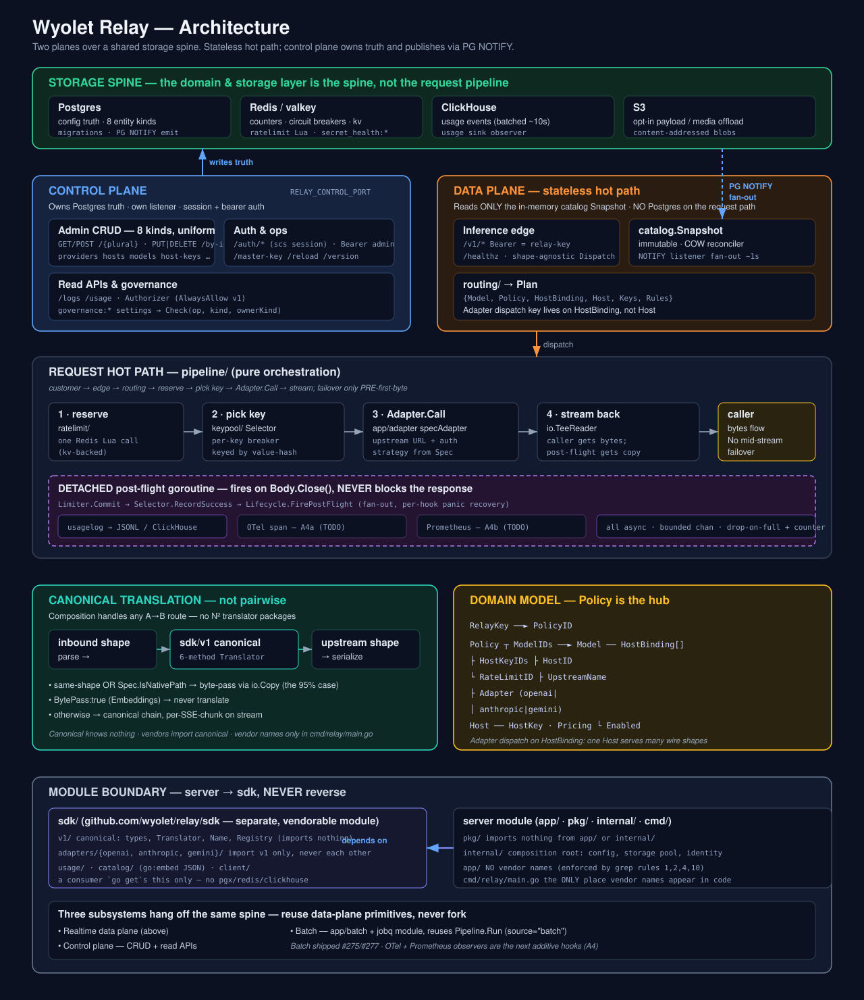

A high-throughput, self-hostable LLM router in Go. BYO provider keys, k8s-native, no reselling. This document covers the core architecture and how every pluggable backend integrates behind a stable interface seam.

docs/architecture.svg for the source.The load-bearing idea: the “spine” is the domain model + storage layer, not the request pipeline. Everything else is a consumer of that spine. Two planes sit on top:
Owns Postgres truth. Serves admin CRUD (8 kinds), /auth/*, read APIs (/logs, /usage), and ops endpoints. Every write triggers a PG NOTIFY.
Runs on RELAY_CONTROL_PORT — physically separate from the data plane.
Serves /v1/* inference. Reads only the in-memory catalog.Snapshot — never touches Postgres on the request path. Scales horizontally; pods stay in sync via the NOTIFY listener (~1s).
Four backing stores, each with a distinct role and a distinct durability contract:
| Store | Role | Contract |
|---|---|---|
| Postgres | Config truth — the 8 entity kinds, versioned migrations | Source of truth. Mutated only via the control plane. Publishes change via PG NOTIFY. |
| Redis / valkey | Hot counters, rate-limit reservations, per-key circuit breakers | Ephemeral; every key carries a TTL. Reachable via the pkg/kv abstraction. |
| ClickHouse | Usage events (append-only, batched ~10s) | Analytical history, not a live feed. One of several pluggable usage sinks. |
| S3 | Opt-in request/response payloads, media offload | Content-addressed blobs. Off by default; never blocks the hot path. |
The domain model that lives in Postgres is hub-and-spoke around Policy:
RelayKey ──► PolicyID
Policy ┬ ModelIDs ──► Model ── HostBinding[] ┬ HostID
├ HostKeyIDs ├ UpstreamName
└ RateLimitID ├ Adapter (openai | anthropic | gemini)
└ Enabled
Host ── HostKey (env-ref | AES-GCM stored) · Pricing (tier-aware)Critically, Adapter — the wire-shape dispatch key — lives on the HostBinding, not the Host. One host (e.g. AWS Bedrock) can serve Claude (Anthropic shape) and Llama (OpenAI shape) simultaneously.
A customer request flows through a shape-agnostic edge into a pure orchestration pipeline. There is no middleware/plugin chain — the handler builds a request and calls Pipeline.Run.
POST /v1/chat/completions Bearer <relay-key>
│
▼
httpapi/inference shape-agnostic Dispatch, NO per-vendor branching
▼
routing/ Snapshot lookup → Plan{Model, Policy, HostBinding, Host, Keys, Rules}
▼
pipeline/ 1. reserve → ratelimit/ (one Redis Lua call)
2. pick key → keypool/ (Selector + per-key breaker, keyed by value-hash)
3. Adapter.Call → app/adapter specAdapter (upstream URL + auth from Spec)
4. stream → io.TeeReader: caller gets bytes, post-flight gets a copy
▼
bytes flow to caller (failover only PRE-first-byte; no mid-stream failover)
▼
╔═ DETACHED post-flight goroutine — fires on Body.Close(), never blocks ═╗
║ Limiter.Commit → Selector.RecordSuccess → Lifecycle.FirePostFlight ║
╚════════════════════════════════════════════════════════════════════════╝Close()s the response body. Observers are lifecycle.PostFlightHooks; each runs in its own sub-goroutine with panic recovery. They read the request Context + event; they never mutate. All emits (usage → CH, span → OTel, payload → S3) are async over bounded channels with drop-on-full + a Prometheus drop counter.
Cross-vendor translation runs against a relay-native canonical (sdk/v1) — not pairwise. Composition handles any A→B route, so there is no N² explosion of translator packages.
inbound shape ──parse──► sdk/v1 canonical ──serialize──► upstream shape
(Request/Response + 6-method Translator)Spec.IsNativePath match → byte-pass via io.Copy (the 95% case)sdk/v1 imports nothing; (2) vendors import canonical, never each other; (4) no vendor names in app/; (10) the sdk/ module imports nothing from app/ or internal/. Vendor names appear in code only in cmd/relay/main.go, as adapter.Spec literals.
Every external system plugs in behind a narrow Go interface defined by the consumer. The composition root (cmd/relay/main.go + internal/) is the only place concrete backends are wired; the rest of the codebase depends on the interface. This is what keeps the sdk/ module vendorable and the hot path swappable.
internal/storage owns the pgx pool + migrations and exposes Pool() only. Each app/X.Store constructs its own sqlc-generated typed queries against that pool and converts to domain types at the boundary.
pgx/pgxpool/pgconn types in any signature outside internal/storage and the app/X.Store constructors.internal/storage/gen/queries.sql and the per-entity store files.*provider.Provider etc. at the boundary.app/hostkey), primitives in pkg/crypto; the master key never enters storage.Writes fan out cluster-wide via PG NOTIFY: the emit (on any catalog write) is unconditional; only the LISTEN consumer is gated by RELAY_CLUSTER_MODE. Payload format is kind:op:id, parsed with a bounded split so colon-namespaced ids survive.
pkg/kv.Store with two backends — kv.Mem (tests, single-process) and kv.Redis (production). Consumers (ratelimit, keypool, session) each declare a narrow interface listing only the methods they use; they never import a fat kv.Store.
{tag}: — the consumer's atomicity boundary. All keys touched in one Lua script / lock share the same tag.keys.go per consumer — no inline key strings.kv.Mem and kv.Redis.The rate-limiter is a kv-backed Lua script — the goal is one Redis round-trip per request (reserve), with auth + key selection + breaker checks sitting alongside it, not three separate trips. Full guide: docs/kv.md.
app/usagelog registers a lifecycle.PostFlightHook → bounded Emitter (drop-on-full + atomic drop counter) → Sink interface. New sinks are additive: register at boot, no pipeline change.
Backends live as subpackages of pkg/usage so their heavy deps stay server-side and never leak into the SDK:
| Sink | Backend | Status |
|---|---|---|
file / stdout | JSONL | live |
clickhouse | ch driver | designed, next observer |
postgres | pgx | subpackage present |
valkey | redis | subpackage present |
The pure wire shapes (Tokens, timing) live in sdk/usage; the Event record + filter/aggregate engine live server-side in pkg/usage. Cost is deliberately kept out of the event — derive it in the sink from tokens × pricing. OTel tracing (A4a) and Prometheus (A4b) are the next two hooks to land on the same spine.
pkg/secret — a Ref{Kind,Env,ID,Path} resolved by a Resolver/Registry. Composition wires kinds in app/secret.Wire. Built-ins are env and stored (AES-GCM in PG via app/secret.Store).
External backends are fetch-only (resolved in-memory, never persisted) and land as subpackages:
| Kind | Backend | Notes |
|---|---|---|
env | process env | built-in, no creds in PG |
stored | Postgres + AES-GCM | ciphertext only; RELAY_MASTER_KEY |
aws | Secrets Manager | stdlib SigV4 |
azure | Key Vault | — |
gcp | Secret Manager | stdlib |
bitwarden | Secrets Manager | pure-Go client crypto |
onepassword | 1Password SDK | //go:build cgo — excluded from default CGO_ENABLED=0 builds |
On an upstream FailureAuth, the request loop consults pipeline.KeyAgent (impl app/secret.Agent): fail over + heal in the background when other candidates exist, or single-flight a re-resolve and retry the same key. The request path never imports secret directly. Full guide: docs/secrets.md.
sdk/adapters/<vendor>/ implements v1.Translator (six pure methods: parse/serialize × request/response + two stream factories). A generic app/adapter.specAdapter turns that translator + a Spec (upstream URL, auth strategy, inbound paths) into a working pipeline.Adapter.
sdk/adapters/openai/ owns CC, Responses, and Embeddings as files.openai (CC), openai_responses, openai_embeddings (BytePass:true).provider_data/extensions, annotates an irreducible drop with a greppable // canonical: comment, or surfaces safety-relevant signals — never accept-and-discard.Adding a vendor = a new sdk/adapters/<vendor>/ package + one Spec literal in cmd/relay/main.go. sdk/adapters/gemini/ is the reference for a URL-path-{model} shape. Full guide: docs/adapters.md.
jobq is its own Go module (flat jobs, PG Store + a separate PayloadStore so PG never holds bytes). app/batch is the consumer; it drains jobs through the existing Pipeline.Run with source="batch" — reusing the realtime path's Adapter, keypool Selector, and breakers. It does not fork the hot path.
Customer interface: POST /v1/batches → submit, then poll GET /v1/batches/{id} or receive a webhook (A2, pending), then fetch results. Where a host's adapter exposes a native batch API, relay passes through for the 50% discount; otherwise it simulates via concurrent pipeline calls. Shipped in PRs #275 (jobq) + #277 (consumer).
Whatever the backend, the integration shape is the same:
kv.Store, usage Sink, secret Resolver, v1.Translator, jobq Store). If none fits, the change is architectural — read the relevant docs/ guide first.pkg/usage/clickhouse, pkg/secret/aws). Keep deps out of sdk/.cmd/relay/main.go + internal/. This is the only place a concrete backend name appears.sdk/ may import app/ or internal/; nothing in pkg/ either. The grep tests for rules 1, 2, 4, 10 must stay green.